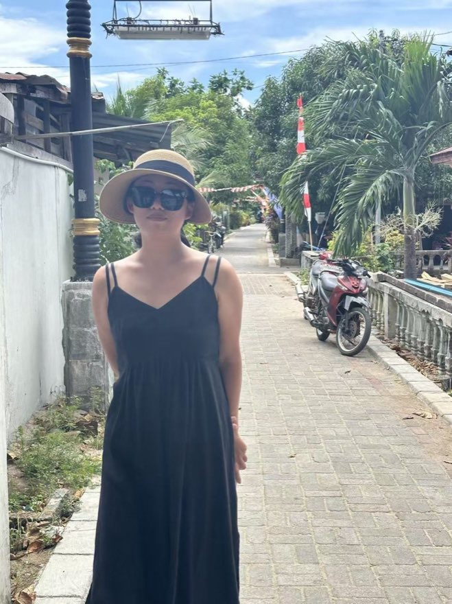

In a lifetime of language classes, lessons with Yujie are honestly the most engaging, fun — and equally challenging and productive — I've ever had. Time flies.
I'm Joy — a certified Mandarin teacher from Nanjing. I recorded all 234 phrases in the China Survival Kit, so your phone can speak for you.
Don't take my word for it — order dinner right here, without speaking a word:
The app has 19 guided conversations like this, plus 234 phrases — all in my real voice, all offline.
Get the appGoing to China before you're fluent? Show your phone; locals tap the answer back. Emergency essentials are free, and the full kit unlocks for $4.99.
No iPhone? The free 30-phrase audio pack works on anything.
A real screen from the app — go on, tap a reply.
Ride-hailing drivers in China confirm passengers by the last 4 digits of your phone number — the #1 moment travelers freeze. The app shows yours huge, and says it the Chinese way (1 is read 幺 "yāo", not "yī" — a detail most apps get wrong).
Type any 4 digits. Nothing is stored or sent — it runs entirely on this page.
yǒng
The hardest part of Chinese isn't tones — it's daring to open your mouth. Lessons are a safe room to try, stumble, and be celebrated for every small win.
yòng
Real-life Chinese from day one: ordering, taxis, work meetings, exam prep — the material is tailored to your exact goals and level.
qù
Clear plans, visual materials, audio for every scenario — with room to chase whatever came up in your week. Students say time flies.
From her verified Preply profile — read them all there.
In a lifetime of language classes, lessons with Yujie are honestly the most engaging, fun — and equally challenging and productive — I've ever had. Time flies.
When I asked her to tailor lessons to my specific needs — translating legal terminology for work — she did it brilliantly. I couldn't recommend her more highly.
She created such a warm, encouraging environment that I felt completely comfortable to try, make mistakes and improve fast. Every small win gets celebrated.
Always incredibly well prepared, with lots of visual materials and audio clips for different scenarios. Her lessons made my learning genuinely fun.
She personalizes every single lesson to your goals, level and interests. Direct, efficient, and patient — I absolutely recommend her.
She breaks the nuances of Chinese into easy, digestible pieces and lets you learn at your own pace. Exactly what you want in a language teacher.
Big Chinese, pinyin, and all 30 recordings in Joy's real voice — straight from the app, free in your inbox. Works on any phone.
Can't wait? Read the full guide online now →
No spam — the cheat-sheet and an occasional tip from Joy. Unsubscribe anytime.

Joy grew up in Nanjing — one of China's great historic capitals — and studied Chinese Language & Literature at university, earning her teaching qualification and Mandarin proficiency certificate along the way. Language structure isn't guesswork for her; it's her craft.
She's a language learner herself — Japanese, and now Indonesian — so she knows exactly what it feels like to be afraid to speak, to not understand, to feel stuck. That's why her classroom runs on encouragement and real expression, not red ink.
文字本身，就像一种有魔力的表达方式。
"Characters themselves are like a magical way of expressing things."